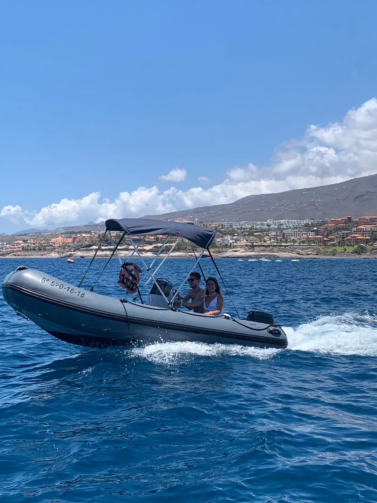
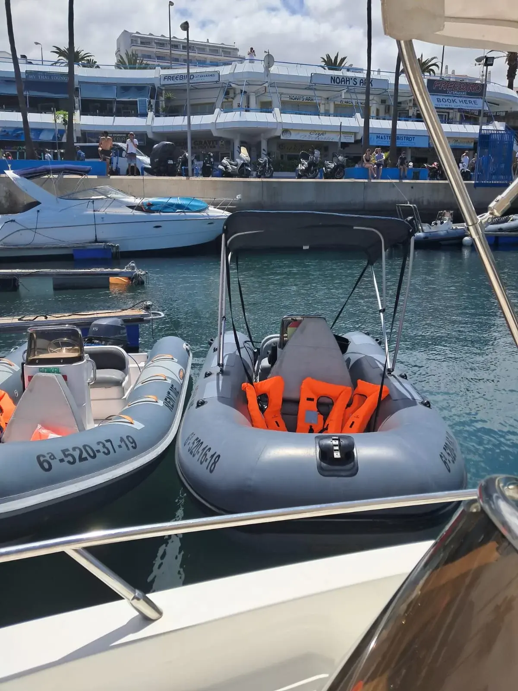
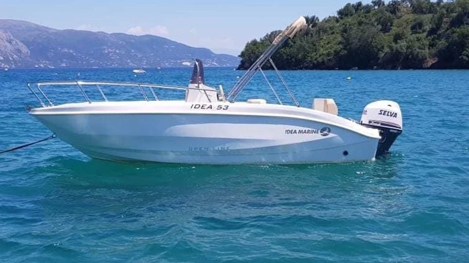

Galleria







Vuoi essere tu al timone? Con il barco senza patente non serve la licenza nautica: dopo un breve briefing di sicurezza prendi il mare in autonomia con i tuoi amici, scegli dove fermarti, fai il bagno dove ti pare. Partenza dal Puerto Colón (Costa Adeje), tutti i giorni 10:00–18:00.
Due modelli disponibili — la Idea 53, perfetta per principianti, coppie e giri tranquilli lungo la costa, e il gommone RIB 15hp (fino a 4 persone), facile da guidare e divertente. Entrambi con carburante incluso, audio Bluetooth e soste bagno lungo la costa.
Noleggio a ore o per la giornata intera (fino a 8 ore), tutti i giorni 10:00–18:00. Cauzione rimborsabile al check-in · documento d'identità o passaporto obbligatorio. Oltre al gommone RIB 15hp (fino a 4 persone), la Idea 53 — senza patente, ideale per principianti — è disponibile su richiesta. Scrivici per tariffe e disponibilità aggiornate.
Dimmi data, quante persone e durata. Ti dico se c'è posto.
💬 Contattaci su WhatsApp